Capture
Shoot in the grove with consent and GPS tips when location is available.
Mallorca · olive & citrus
Photograph a leaf or canopy in the grove. NeuroFarming returns plant-health guidance and regional outbreak context for Mediterranean growers.
Shoot in the grove with consent and GPS tips when location is available.
Cloud BioCLIP-2 returns healthy, pest, disease, or stress — with confidence.
Use advisories, outbreak maps, and agronomist escalation when it matters.
In the handset
Offline-first capture queues the photo when signal drops, then syncs for higher-accuracy cloud diagnosis. On-device TensorFlow Lite covers the first pass without a network.
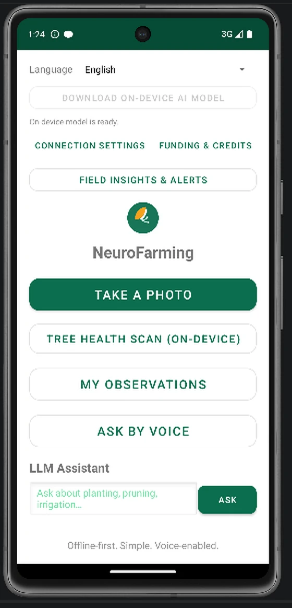

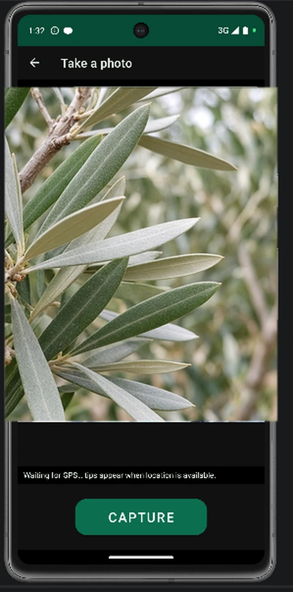
Vision inference
BioCLIP-2 returns a label, confidence score, and recommendation text. Low-confidence or false-healthy cases can escalate for human review through continuous learning.
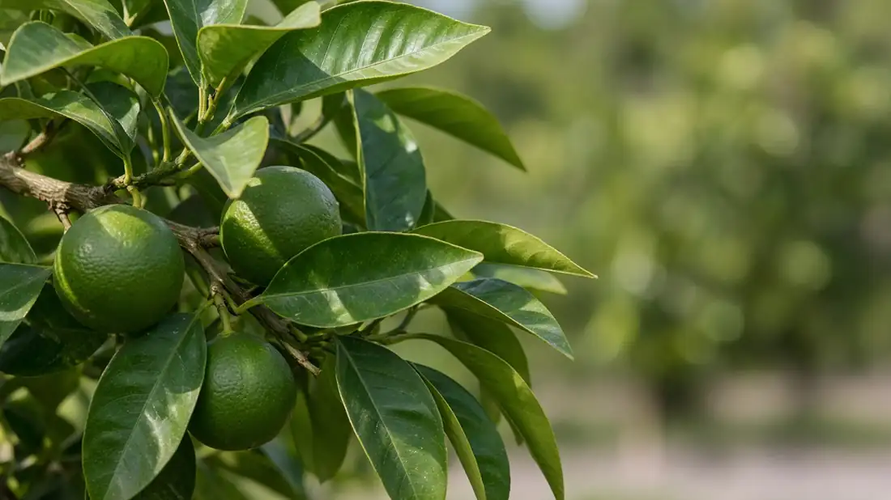
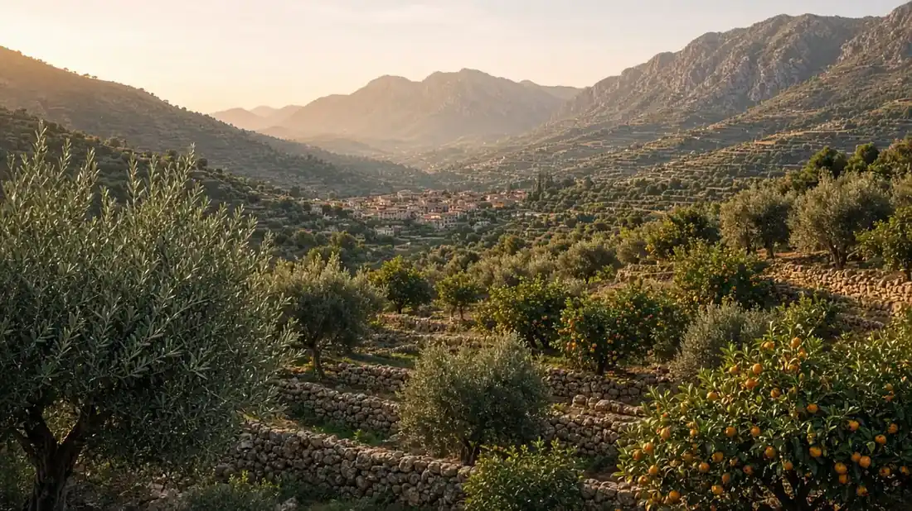
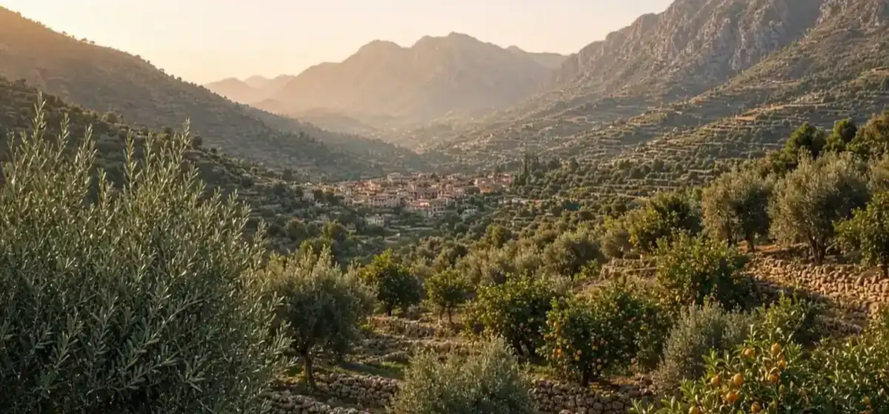
Cooperative insights
Outbreak alerts, weather-driven task advisories, and Mallorca-centred hotspot maps help cooperatives act on shared field evidence — not isolated photographs.
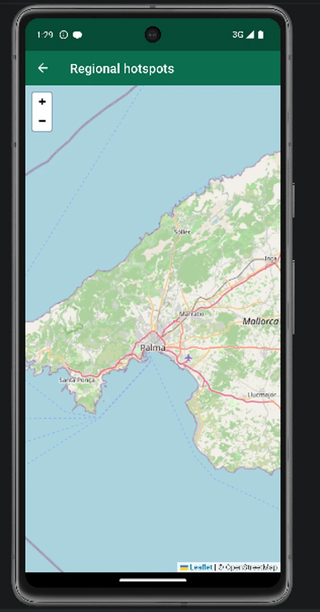
Decision support
The multilingual assistant answers in English, Spanish, Catalan, or Greek — practical support for growers, not a substitute for certified plant-health professionals.
Operations console
NeuroFarming includes a browser-based admin dashboard — not just the field app. Operators manage users, review observations, watch outbreak hotspots, track SMART ERA KPIs, and steer continuous model learning from one console.
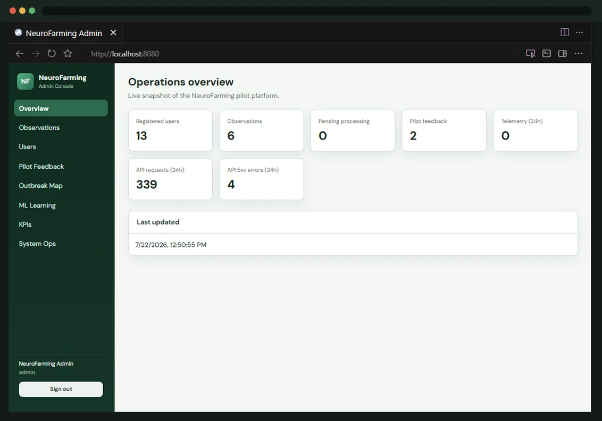
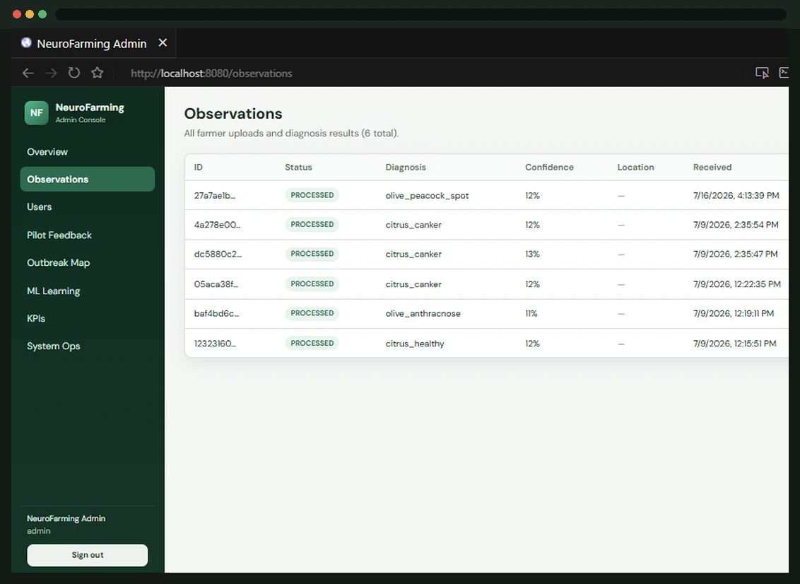
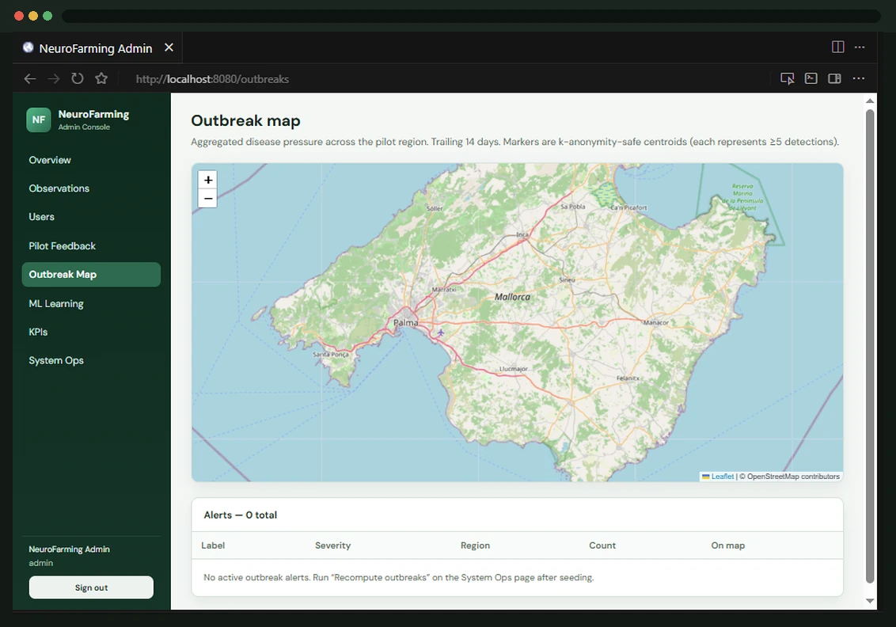
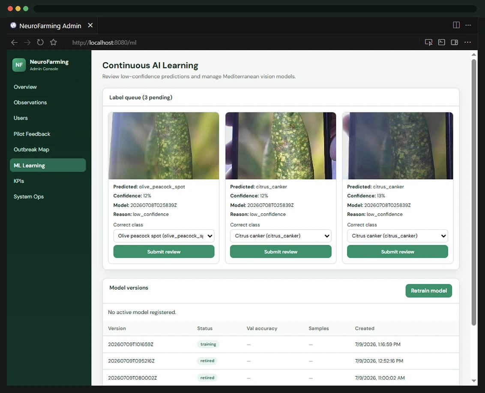
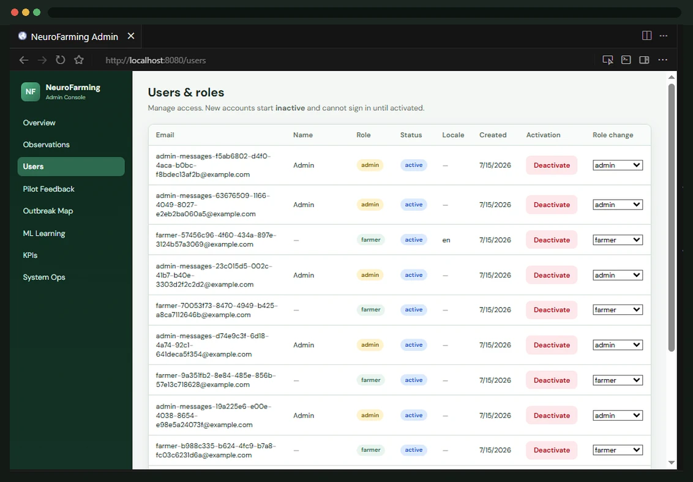
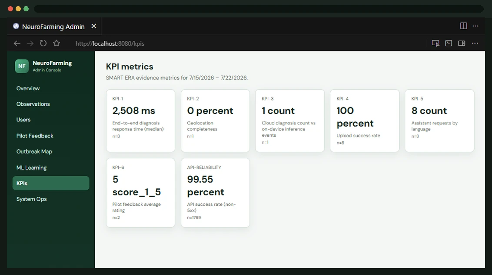
Drag to browse
Command centre
The overview surfaces live operational counts so cooperative staff know what needs attention without digging through logs.
Field evidence
Browse farmer uploads with labels and confidence so agronomists can validate edge cases and keep the learning loop honest.
Spatial risk
The outbreak map centres on the Mallorca pilot so cooperatives can spot clusters early and coordinate response.
SMART ERA Open Call
Field-tested with Mediterranean olive and citrus growers in Mallorca, with an operations console for cooperatives and pseudonymous KPI export for the SMART ERA Data Platform.
Next step
Cooperatives, agronomist networks, and pilot partners — talk to Eight Bells about deployment and Mediterranean rollout.